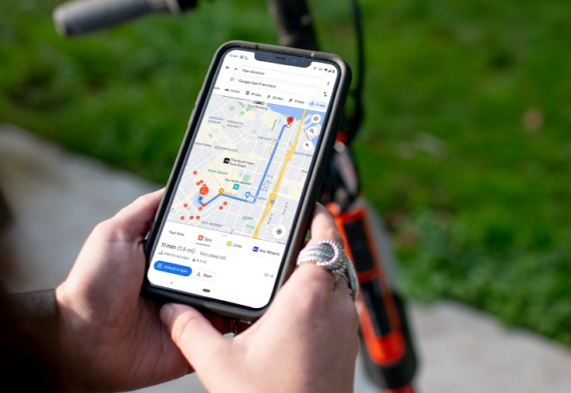

Localización
Encuentra espacios tranquilos cerca de ti. Descubre parques, zonas recreativas y otros lugares seleccionados por Quiet para ayudarte a reducir el ruido en tu entorno.
ComenzarEncuentra espacios tranquilos cerca de ti. Descubre parques, zonas recreativas y otros lugares seleccionados por Quiet para ayudarte a reducir el ruido en tu entorno.
ComenzarUn espacio verde ideal para relajarse. El "Parque San Pablo" ofrece áreas seguras y está a tu disposición para un descanso tranquilo.
Ver ubicación completa →Zona residencial con espacios recreativos. "Urb. Los Andes" te permite disfrutar de un entorno seguro y accesible.
Ver ubicación completa →Ubicada cerca del mar y rodeada de parques. "Residencia San Miguel" es perfecta para quienes buscan paz y contacto con la naturaleza.
Ver ubicación completa →